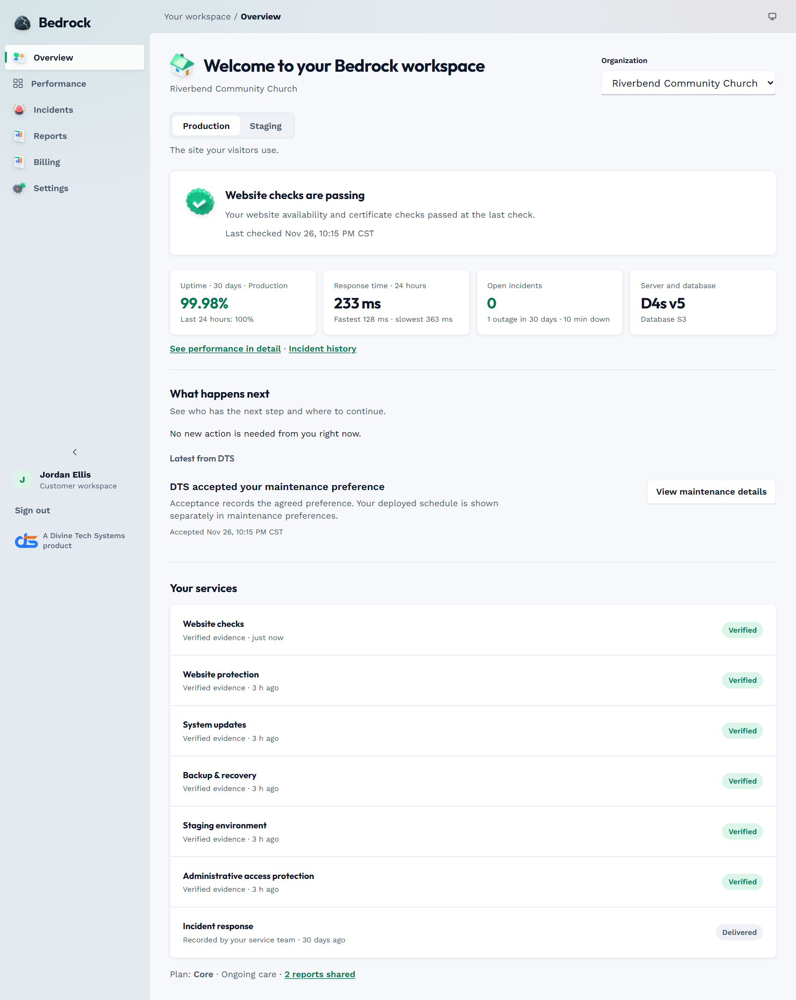

Bedrock · A Divine Tech Systems product
Your church’s Bedrock workspace
Bedrock is where DivineTech (DTS) looks after your Rock website and its hosting. Your workspace is your church’s private view of that work: whether your website is up, how it has performed, what went wrong and when, your monthly reports, and your billing.
What you can do there

| Page | What it is for |
|---|---|
| Overview | Is the website up right now, the main figures, what happens next, and the services on your plan. |
| Performance | Uptime, response time, server and database load, and 90 days of history. |
| Incidents | Every problem Bedrock recorded in the last 30 or 90 days, and when it was resolved. |
| Reports | The monthly health reports DTS has shared with you. |
| Billing | Your plan, card, next payment and invoices. |
| Settings | Your name and password, who else at your church has access, and when maintenance suits you. |
If your plan includes a staging site (a test copy of your website), you can also start, stop and resize its server yourself.
Who does what
| Who | What they do |
|---|---|
| DTS | Watches your website and servers, responds to incidents, applies updates, keeps backups, writes your monthly report, and sets up your first sign-in. Changes to your live (production) site and servers are always made by DTS. |
| You and your team | Sign in to see how things are going, read reports, keep the card on file up to date, invite or remove people at your church, tell DTS when maintenance suits you, and manage your staging server. |
Everyone at your church who has access sees the same things and can do the same things. There are no separate “admin” and “viewer” levels. See People with access.
Guides
Start here
Getting started
Your invitation, signing in, paying, and the setup questions.
Every day
Overview page
Reading the status card, the figures and your services.
Detail
Performance
Uptime, response time, load and the 90-day history.
Self-service
Staging server
Start, stop and resize your test server, and change its database speed.
History
Incidents
What each kind of incident means.
Monthly
Reports
Reading and printing reports, and the status report on your Rock page.
Payments
Billing
Your plan, card and invoices.
Your team
Settings and people
Password, people with access, and maintenance times.
Help
Questions and help
Common questions, and who to ask.